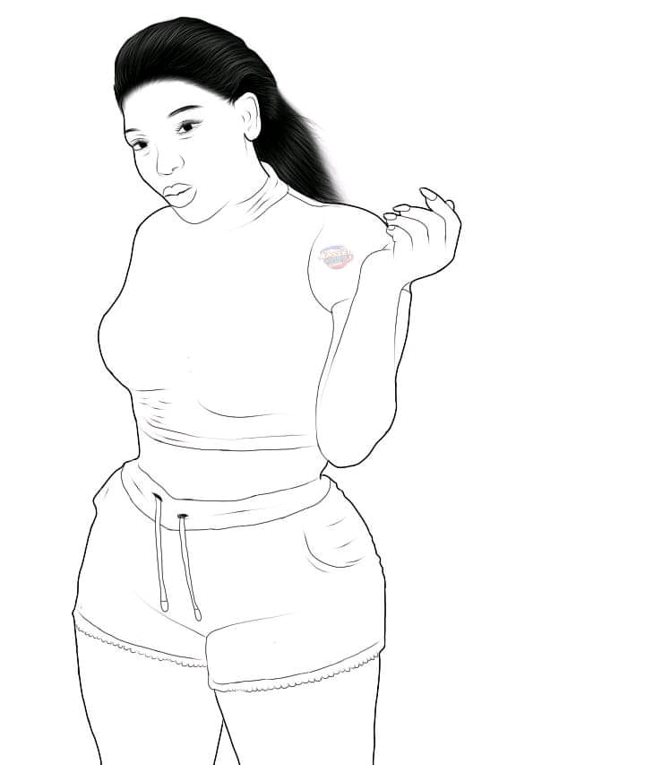
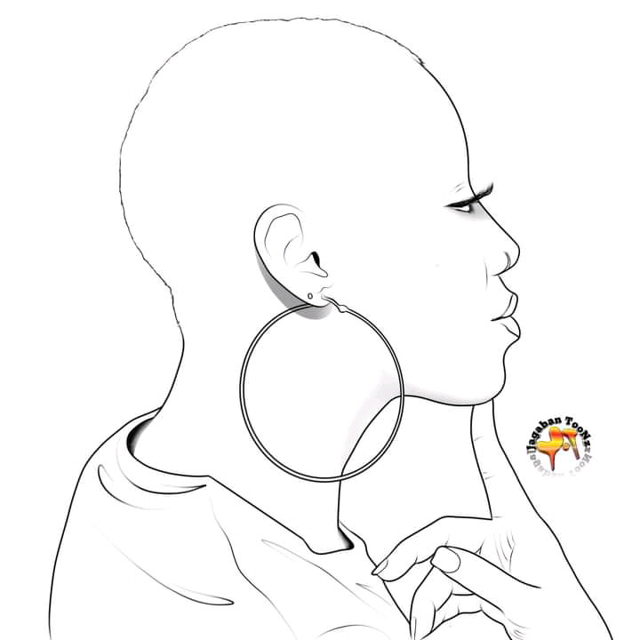

Beginner in photoshop
Photoshop is a software that is so helpful in the picture treatment
it becomes one of the most software that is uses for treating the picture
because of is ability speed,accurancy,the best tools and the quality of
the work easy to use and learn easy to install Have you ever heard someone
say “That is definitely photoshopped”? If you work in the creative industry
as a designer, photographer, art director or any of the other industry roles,
you know this is pretty normal to hear. However if you don’t currently work in
the industry but are interested in pursuing a career in visual arts then
you should probably know about Photoshop.
Photoshop is a photo editing and graphics creation software that was developed
by the company, Adobe. Photoshop offers a wide variety of image editing features
as well as the capability to create complex graphics. Photoshop has become
the industry standard for many creatives as it is very versatile and is usually one of
the first programs many learn to use. if you wish to download it
you may find it down the page
what does photoshop able to do ?
Today, Adobe Photoshop is used by a variety of artists and creative professionals
within the industry. Photoshop is a software that can be used for photography,
graphic design, digital art and more. Below I have provided a few examples of
how Photoshop is used to create amazing work.
you will be able to change your picture as a cartoon one as we are seeing many
people doing and publish on the social media


you can be able to do something like this

Edit Photographs To Look Delicious😋
I used Adobe Photoshop to color correct, sharpen, and modify these images after I imported
them into Adobe Lightroom. Adobe Photoshop allows for more granular control when it comes
to editing photos. The ability to use layers for unique adjustments is key when producing
imagery like this.
Create A Logo For A New Brand
Photoshop is a great tool for working and creating logos. It helps to get all of your ideas
down on paper. Being able to organize your layers into groups is wonderful. Also, adding and
modifying text is made easy in Photoshop with the character panel.
Present Website Designs
After I create designs for a new website in something like Adobe Xd, I will always bring my
exported slides into photoshop to begin organizing my client presentations. This is where Photoshop
is really useful as it allows you to work seamlessly with other Adobe programs.
Create Realistic Packaging Examples
Photoshop is a powerhouse when it comes to creating realistic packaging and mockups for your projects.
This really helps when working with clients to help them understand the idea you have in mind.
Develop A Mobile App
As a designer I have been able to work on a number of mobile apps and have used Photoshop a lot during
the process. This is another example of how Photoshop can work well with other Adobe programs
to create work that really makes an impact.
Make Cool Posters
Combining imagery and text is exactly what Photoshop is all about. In this example I was able to edit
the image to get the color right. Crop the image to focus in on the subject and then add text that would
compliment the objective of the poster.
Interior Design Of A Football Stadium
You can use Adobe Photoshop for interior design! I helped create designs for a fantasy football lounge
in a football stadium using Photoshop. Photoshop helped me concept and present my ideas for the various
applications inside the lounge.
Present An Amazon Alexa Skill
Working on something like Amazon Alexa where there isn’t a lot of visual materials to create is fun.
I used Adobe Photoshop to create slides and infographics to present a voice skill and statistics of how
voice enabled devices are projected to grow in the future.
Create Artwork With My Favorite Cartoons
This was one of my favorite projects because I used Photoshop to concept the artwork around
a mobile for my favorite childhood cartoon, Transformers!
Is Learning Photoshop Worth It?
Learning how to use Adobe Photoshop can be very valuable to not only those who want to build a
career in the creative industry but also for those who aren’t. As social media and creating content
becomes such a big part of businesses, any experience with graphic applications like Adobe Photoshop
will give you an advantage when applying to your next big job opportunity. When creative companies post
an open role within their team, they will almost always list experience with Adobe Photoshop as a requirement.
Adobe Photoshop is very versatile and allows creatives to complete a wide variety of tasks with it.
Adobe Photoshop can sometimes be the only program that a creative will ever need in their repertoire.
Learning Photoshop can open up new opportunities in a number of fields. Once you have a solid understanding
of Photoshop, this will also put you in a great position to learn and use other Adobe programs. Some tools and
shortcuts are very similar throughout all of the Adobe programs. Teaching yourself to use other Adobe programs
outside of Photoshop will allow you to sharpen your skills and open your artwork up to creating something unique.
Is Adobe Photoshop Free?
Unfortunately Adobe Photoshop is not free and requires you to pay for a subscription to use it. However you
can try Adobe Photoshop free for 7 days before paying for a full subscription to ensure it is right for you.
To get started using Adobe Photoshop you will have to register and sign up for an Adobe Creative Cloud account.
Using that link to create an Adobe Creative Cloud will give you a free 7-day trial to test out Photoshop as well as
a bunch of other really awesome Adobe programs. Once your 7-day trial is up you will have to choose a Creative Cloud plan
to continue using the Adobe software.
if you wish to download the setup of photoshop or the collection master adobe for you to get it you hsve just to
click to the link Below👇👇👇👇👇
link to index page to download adobemaster collections